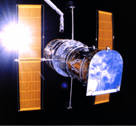

Hubble Space Telescope (HST) is an Earth-orbiting telescope with a 2.4-m diameter mirror, named after the astronomer Edwin Hubble. It is operational at ultraviolet, optical and infrared wavebands. When first launched by the Space Shuttle ‘Discovery’ in 1990, it provided unprecedented spatial resolution due to its position above the Earth’s atmosphere, observing through which results in diffraction-limited seeing for non-adaptive optics ground-based telescopes at optical and infrared wavelengths. Cosmic UV radiation is blocked by the Earth’s atmosphere meaning ground-based observing in this band is not possible.
The main instruments onboard HST are the Wide Field Camera 3 (WFC3), the Space Telescope Imaging Spectrograph (STIS), the Near Infrared Camera and Multi-Object Spectrometer (NICMOS), the Cosmic Origins Spectrograph (COS) and the Advanced Camera for Surveys (ACS).
HST is a joint programme between ESA (European Space Agency) and NASA (National Aeronautics and Space Administration) and science operations are co-ordinated by the Space Telescope Science Institute (STScI) in Baltimore, Maryland, USA. It has been maintained via ‘on-orbit’ servicing, whereby every 3 years a Space Shuttle mission is sent to repair equipment and install new instruments.
Servicing Mission 4 (SM4), expected to be the last servicing mission to HST, launched on May 11, 2009 and installed two new instruments: Wide Field Camera 3 (WFC3) and the Cosmic Origins Spectrograph (COS).
HST will be replaced by the next-generation James Webb Space Telescope, which is primed for observing at long-wavelength optical to mid-IR wavebands and is scheduled to launch in 2014.

Credit: NASA